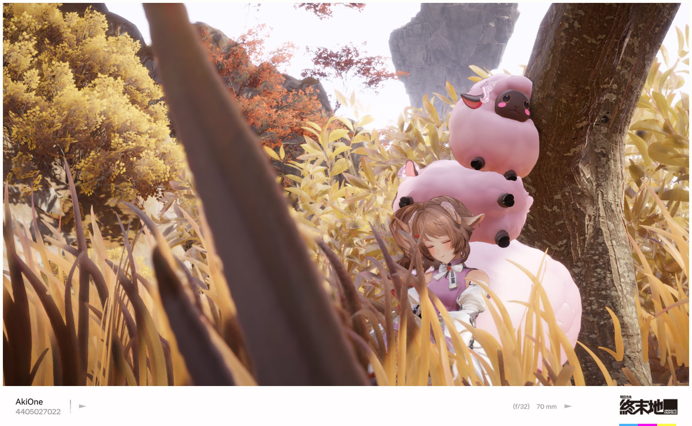

FIELD NOTES — 001遊戲攝影 / ENDFIELD
ENDFIELD / THROUGH MY LENS16 FRAMES
THE COLLECTION
探索的切片 / 001
16 張影像，一段旅程。
點選相片，進入完整畫面。
UNTIL THE NEXT FRAME
回到頂端 ↑
THE COLLECTION
16 張影像，一段旅程。
點選相片，進入完整畫面。
UNTIL THE NEXT FRAME
回到頂端 ↑